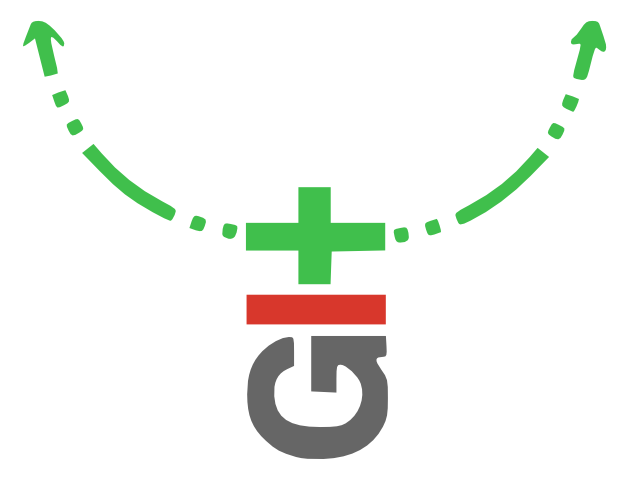

Git Annex: Dropbox fuer Harte

Problem:
- Git eignet sich aufgrund seiner Funktionsweise nur bedingt für große Dateien
- Großen Dateien → hoher Ressourcenverbrauch
Abhilfe: annex
- Ein Wrapper um git herum, der git ,,aufbohrt''
- Nur Metadaten werden verwaltet
- Content wird nicht ,,getrackt'', git Features weiterhin vorhanden
Repository anlegen
$ mkdir annex
$ cd annex
$ git init .
Initialized empty Git repository in /home/christoph/annex/.git/
$ git annex init 'repo on desktop'
init repo on desktop ok
(Recording state in git...)
Files hinzufügen
$ cp ~/debian-7.0.0-amd64-netinst.iso .
$ git annex add .
add debian-7.0.0-amd64-netinst.iso (checksum...) ok
add wallpaper-279066f0.jpg (checksum...) ok
(Recording state in git...)
Dateien commiten.
$ git commit -am 'files added.'
[master (root-commit) 1dcad58] files added.
2 files changed, 2 insertions(+)
create mode 120000 debian-7.0.0-amd64-netinst.iso
create mode 120000 wallpaper-279066f0.jpg
Und nun? Let's sync!
Dateien synchronisieren
$ git clone /home/christoph/annex/
Cloning into 'annex'...
done.
$ cd annex
$ ls
debian-7.0.0-amd64-netinst.iso wallpaper-279066f0.jpg
$ feh wallpaper-279066f0.jpg
feh WARNING: wallpaper-279066f0.jpg does not exist - skipping
feh: No loadable images specified.
See 'feh --help' or 'man feh' for detailed usage information
$ git annex get wallpaper-279066f0.jpg
get wallpaper-279066f0.jpg (merging origin/git-annex into git-annex...)
(Recording state in git...)
(from origin...) ok
(Recording state in git...)

- Location Tracking
- Future Proofing
- Backup Copies
- Special Remotes
- Transfering Data
- Distributed Version Control
njaaaa
- Noch recht stark in der Entwicklung
- Im Moment hauptsächlich was für Geeks
Aber
- Abhilfe in Arbeit → Webfrontend
Interessante Features die es bisher so nicht gibt:
- Verschiedene ,,cloud remotes'' nutzbar z.B. box.com, rsync.net, Amazon S3
- Kontrolle liegt beim Benutzer, nicht Storage Anbieter - interessant für Unternehmen mit kritischen Daten.
- Verschlüsselung, Vertrauensstufen, Sharing etc.
- Verschiedene ,,Repository Groups'' definierbar und kombinierbar → verschiedene Szenarien abdeckbar.
- Praktisch viele Features die man von einer gutem Storage-Lösung erwartet
Code Hosting mit Github: Github: Ab in die Wolke